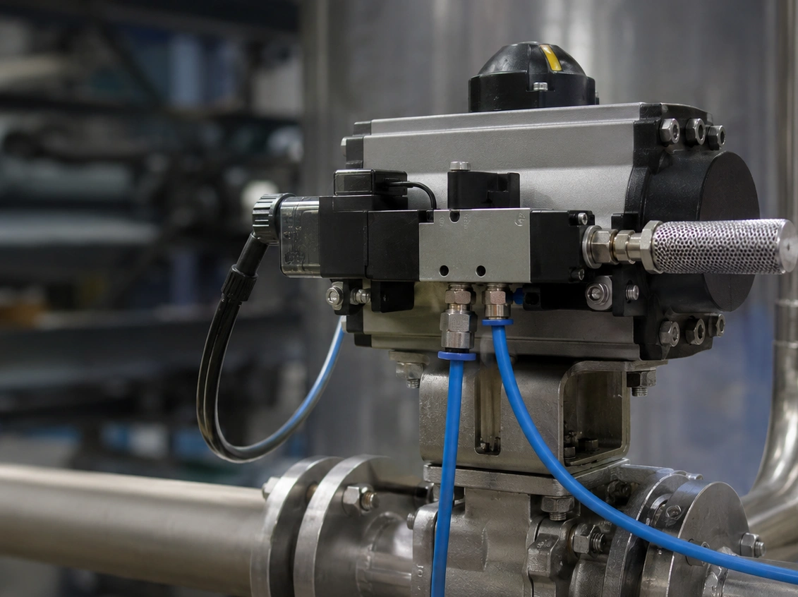

Solenoid valve e atuador pneumático: Cv, stroking time e SOV
Conteúdo técnico: ALOGY Engenharia · Atualizado em: 11/09/2026

A solenoid valve (SOV) converte um comando elétrico em mudança de caminho pneumático. Em atuadores on/off, ela pode pressurizar e exaurir diretamente as câmaras. Em uma control valve modulante, o comando principal normalmente passa pelo positioner; uma SOV pode existir na cadeia de trip/interlock, conforme a arquitetura do fabricante e do projeto.
Visual: duas arquiteturas que não devem ser confundidas
O que determina o tempo de manobra
Actuator volume
Quanto maior o volume que precisa ser preenchido ou esvaziado, maior a demanda de ar para o mesmo tempo de curso.
Supply pressure
A pressão disponível precisa ser considerada junto do torque/thrust requerido e das perdas na linha.
SOV Cv / flow capacity
O Cv da solenoide influencia a capacidade de passagem, mas deve ser analisado com portas, pressão e condição de exaustão.
Tubing e fittings
Diâmetro interno, comprimento, conexões, manifold e curvas podem se tornar a restrição dominante.
Exhaust / silencer
Silenciador pequeno, saturado ou parcialmente bloqueado pode aumentar muito o tempo de retorno.
Actuator type
Spring return e double acting têm comportamentos diferentes em pressurização, exaustão e fail position.
NAMUR, montagem remota e função de segurança
Uma SOV montada em interface NAMUR pode reduzir volume e tubulação entre a válvula piloto e o atuador, mas isso não elimina a necessidade de verificar Cv, faixa de pressão, temperatura, materiais e classificação elétrica. Em montagem remota, o comprimento e diâmetro das linhas ganham mais peso.
Quando a SOV participa de shutdown, ESD ou outra função de segurança, a seleção e o teste precisam seguir a arquitetura aprovada. Não altere fail action, lógica de energização, bypass ou tempo de curso apenas para “ganhar velocidade” sem avaliar a função completa.
Diagnóstico quando a válvula ficou lenta
- compare o stroking time atual com o baseline da mesma válvula e mesma pressão de supply;
- confirme a tensão na bobina durante a atuação e a compatibilidade elétrica;
- meça a pressão antes e depois da SOV durante o movimento;
- inspecione tubing, fittings, silencers e possíveis restrições;
- separe enchimento lento de exaustão lenta;
- verifique atrito/stiction da válvula e condição do atuador;
- em válvula modulante, compare comando 4–20 mA, saída do positioner e feedback de posição.
Cuidados com a bobina
- confirmar tensão nominal, corrente/potência e duty cycle;
- avaliar temperatura ambiente e aquecimento da bobina;
- verificar proteção contra surtos quando prevista no circuito;
- confirmar classificação de área e certificação compatível com a instalação;
- não escolher uma SOV apenas pela tensão: função pneumática, portas, Cv e materiais também importam.
Ferramentas e conteúdos relacionados
Veja também conexões pneumáticas de instrumentação e calibração de control valve 4–20 mA.
Aviso técnico
Este conteúdo é educativo. O tempo real de manobra depende do conjunto completo: SOV, tubing, supply, exhaust, positioner, actuator, valve load e lógica de controle. Para funções críticas ou de segurança, preserve a filosofia de falha e valide qualquer alteração com documentação do fabricante e engenharia responsável.